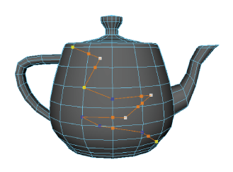

“多切割”(Multi-Cut)工具对循环边进行切割、切片和插入。您可以沿着切割提取或删除边，通过边流和细分插入循环边和切割，并在“平滑网格预览”(Smooth Mesh Preview)模式下进行编辑。

可以通过以下方式访问“多切割工具”(Multi-Cut Tool)：
- 访问建模工具包(Modeling Toolkit)窗口的“工具”(Tools)部分，然后单击
 。
。
- 选择“网格工具 > 多切割”(Mesh Tools > Multi-Cut)，访问主菜单栏。
- 选择“多切割工具”(Multi-Cut Tool)（以打开标记菜单，在选中对象、边或面后，按住 Shift 键单击鼠标右键），访问标记菜单。